<title>Visita Olancho</title>
<meta name="description" content="Guía turística de Olancho, Honduras: lugares, gastronomía, cultura y consejos de viaje.">
<link rel="preconnect" href="https://fonts.googleapis.com" />
<link rel="preconnect" href="https://fonts.gstatic.com" crossorigin />
<link href="https://fonts.googleapis.com/css2?family=Zilla+Slab:wght@500;600;700&family=Work+Sans:wght@400;500;600;700&family=Redaction+10:ital,wght@0,400;0,700;1,400&display=swap" rel="stylesheet" />
<link rel="stylesheet" href="css/estilos.css" />
<!-- ===================== MENÚ ===================== -->
    <nav>
      <div class="nav__header">
        <div class="nav__logo">
          <a href="#inicio"><span>Visita</span> Olancho</a>
        </div>
        <button class="nav__menu__btn" id="menu-btn" aria-label="Abrir menú" aria-expanded="false">
          <svg class="icon icon-menu" viewBox="0 0 24 24" aria-hidden="true"><line x1="3" y1="7" x2="21" y2="7"/><line x1="7" y1="12" x2="21" y2="12"/><line x1="11" y1="17" x2="21" y2="17"/></svg>
          <svg class="icon icon-close" viewBox="0 0 24 24" aria-hidden="true"><line x1="6" y1="6" x2="18" y2="18"/><line x1="18" y1="6" x2="6" y2="18"/></svg>
        </button>
      </div>
      <ul class="nav__links" id="nav-links">
        <li><a href="#inicio">Inicio</a></li>
        <li><a href="#acerca">Acerca</a></li>
        <li><a href="#lugares">Lugares</a></li>
        <li><a href="#comida">Comida</a></li>
        <li><a href="#cultura">Cultura</a></li>
        <li><a href="#contacto">Contacto</a></li>
        <li>
          <a href="#planea" class="btn btn-small">
            <span class="btn-face"><span class="btn-text">Planea tu viaje
              <svg class="icon" viewBox="0 0 24 24" aria-hidden="true"><line x1="4" y1="12" x2="20" y2="12"/><polyline points="14 6 20 12 14 18"/></svg>
            </span></span>
          </a>
        </li>
      </ul>
    </nav>

    <!-- ===================== PORTADA ===================== -->
    <header class="section__container header__container" id="inicio">
      <div class="header__image">
        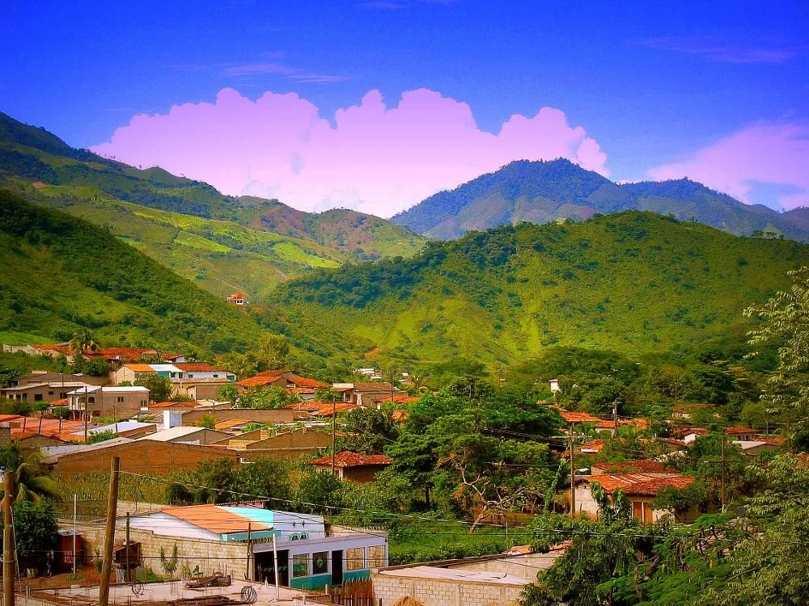
        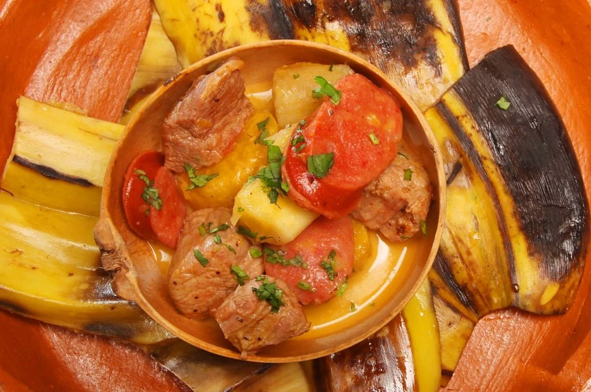
        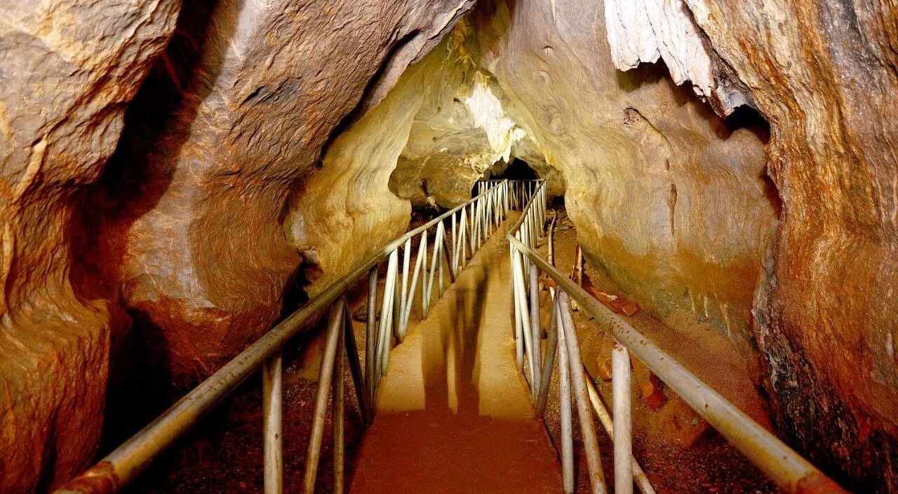
      </div>
      <div class="header__content" id="planea">
        <p class="header__chip">Honduras · Centroamérica</p>
        <h1>Bienvenidos a <span class="destacado loader-wrapper" role="text" aria-label="Olancho"><span class="loader-letter" aria-hidden="true">O</span><span class="loader-letter" aria-hidden="true">l</span><span class="loader-letter" aria-hidden="true">a</span><span class="loader-letter" aria-hidden="true">n</span><span class="loader-letter" aria-hidden="true">c</span><span class="loader-letter" aria-hidden="true">h</span><span class="loader-letter" aria-hidden="true">o</span><span class="loader" aria-hidden="true"></span></span></h1>
        <p class="section__description">
          El departamento más grande de Honduras: montañas de bosque nublado,
          cuevas milenarias, ríos de oro y la auténtica cultura vaquera.
          Elige a dónde quieres ir y planea tu viaje.
        </p>
        <form id="trip-form">
          <div class="input__group">
            <label for="destino">
              <svg class="icon" viewBox="0 0 24 24" aria-hidden="true"><path d="M21 10c0 7-9 13-9 13s-9-6-9-13a9 9 0 0 1 18 0z"/><circle cx="12" cy="10" r="3"/></svg>
              Lugar
            </label>
            <select id="destino" name="destino">
              <option value="sierra-agalta">Sierra de Agalta</option>
              <option value="cuevas-talgua">Cuevas de Talgua</option>
              <option value="la-muralla">Parque Nacional La Muralla</option>
              <option value="rio-platano">Reserva del Río Plátano</option>
              <option value="boqueron">El Boquerón</option>
              <option value="juticalpa">Juticalpa</option>
              <option value="manto">Manto</option>
              <option value="rio-guayape">Río Guayape</option>
              <option value="catacamas">Catacamas</option>
            </select>
          </div>
          <div class="input__group">
            <label for="fecha">
              <svg class="icon" viewBox="0 0 24 24" aria-hidden="true"><rect x="3" y="4" width="18" height="18" rx="2"/><line x1="16" y1="2" x2="16" y2="6"/><line x1="8" y1="2" x2="8" y2="6"/><line x1="3" y1="10" x2="21" y2="10"/></svg>
              Fecha
            </label>
            <input type="date" id="fecha" name="fecha" />
          </div>
          <button class="btn btn-icon" type="submit" aria-label="Buscar lugar">
            <span class="btn-face"><span class="btn-text">
              <svg class="icon" viewBox="0 0 24 24" aria-hidden="true"><circle cx="11" cy="11" r="7"/><line x1="21" y1="21" x2="16.5" y2="16.5"/></svg>
            </span></span>
          </button>
        </form>
        <p class="form__msg" id="form-msg" aria-live="polite"></p>
      </div>
    </header>

    <!-- ===================== ACERCA ===================== -->
    <section class="about" id="acerca">
      <div class="section__container about__container">
        <div class="about__image reveal">
          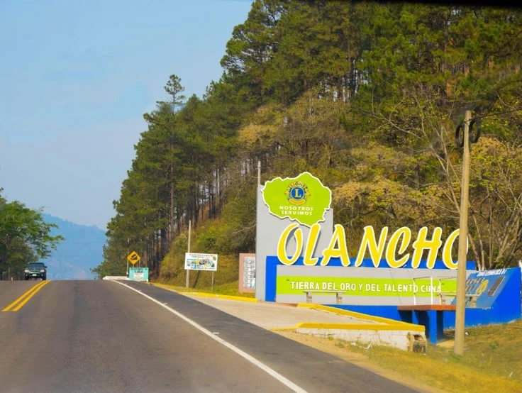
        </div>
        <div class="about__content reveal">
          <h3 class="section__subheader">Conoce Olancho</h3>
          <h2 class="section__header">
            Es hora de una <span>nueva aventura</span> en la tierra de los valientes
          </h2>
          <p class="section__description">
            Olancho, conocido popularmente como "La República de Olancho", ocupa
            cerca de una quinta parte del territorio hondureño. Su cabecera es
            Juticalpa y entre sus ciudades más importantes están Catacamas,
            Campamento, San Esteban, Gualaco y Salamá. Es tierra de ganaderos,
            de sombreros y caballos, de quesos y mantequilla, y guarda algunos de
            los tesoros naturales y arqueológicos más importantes del país.
          </p>
          <ul class="about__stats">
            <li><strong>≈ 24,000</strong><span>km² de territorio</span></li>
            <li><strong>23</strong><span>municipios</span></li>
            <li><strong>2,354 m</strong><span>altura de La Picucha</span></li>
          </ul>
          <div class="about__signature">Olancho, tierra del oro</div>
        </div>
      </div>
    </section>

    <!-- ===================== TIPOS DE VIAJE ===================== -->
    <section class="section__container tour__container" id="tipos">
      <h3 class="section__subheader">Tipos de viaje</h3>
      <h2 class="section__header">¿Qué quieres vivir en Olancho?</h2>
      <div class="tour__grid">
        <button class="tour__card reveal" data-filter="naturaleza">
          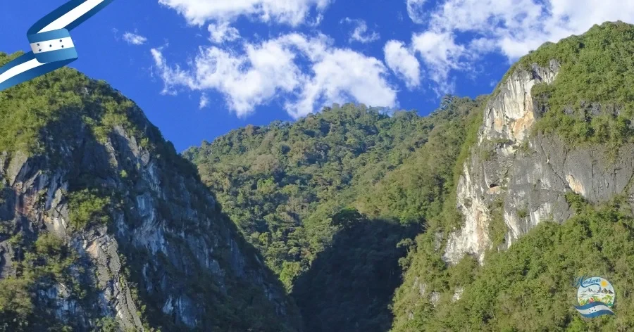
          <h4>Naturaleza</h4>
          <p>5 lugares</p>
        </button>
        <button class="tour__card reveal" data-filter="historia">
          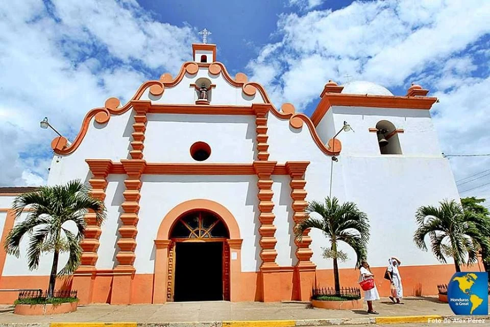
          <h4>Historia</h4>
          <p>4 lugares</p>
        </button>
        <button class="tour__card reveal" data-filter="aventura">
          
          <h4>Aventura</h4>
          <p>5 lugares</p>
        </button>
        <a class="tour__card reveal" href="#comida">
          
          <h4>Gastronomía</h4>
          <p>8 platos</p>
        </a>
      </div>
      <div class="tour__btn">
        <a href="#lugares" class="btn" data-filter-link="todos">
          <span class="btn-face"><span class="btn-text">Ver todos los lugares
            <svg class="icon" viewBox="0 0 24 24" aria-hidden="true"><line x1="4" y1="12" x2="20" y2="12"/><polyline points="14 6 20 12 14 18"/></svg>
          </span></span>
        </a>
      </div>
    </section>

    <!-- ===================== LUGARES ===================== -->
    <section class="destination" id="lugares">
      <div class="section__container destination__container">
        <h3 class="section__subheader">Destinos</h3>
        <h2 class="section__header">Lugares turísticos de Olancho</h2>
        <p class="destination__filter" id="filter-label" aria-live="polite">Mostrando: todos los lugares</p>
        <div class="destination__grid" id="places-grid">
          <article class="destination__card reveal" id="sierra-agalta" data-category="naturaleza aventura">
            
            <div class="destination__card__content">
              <h4>Bosque nublado y la cumbre de La Picucha</h4>
              <h5>Sierra de Agalta · Gualaco / Catacamas</h5>
              <p>Uno de los bosques nublados mejor conservados de Centroamérica, con senderos, cascadas y gran biodiversidad.</p>
              <div class="destination__card__footer"><h6>Parque Nacional</h6><p>Naturaleza</p></div>
            </div>
          </article>
          <article class="destination__card reveal" id="cuevas-talgua" data-category="historia aventura">
            
            <div class="destination__card__content">
              <h4>La cueva de las calaveras brillantes</h4>
              <h5>Cuevas de Talgua · Catacamas</h5>
              <p>Restos humanos de más de 3,000 años cubiertos de cristales de calcita que brillan con la luz.</p>
              <div class="destination__card__footer"><h6>Arqueología</h6><p>Historia</p></div>
            </div>
          </article>
          <article class="destination__card reveal" id="la-muralla" data-category="naturaleza">
            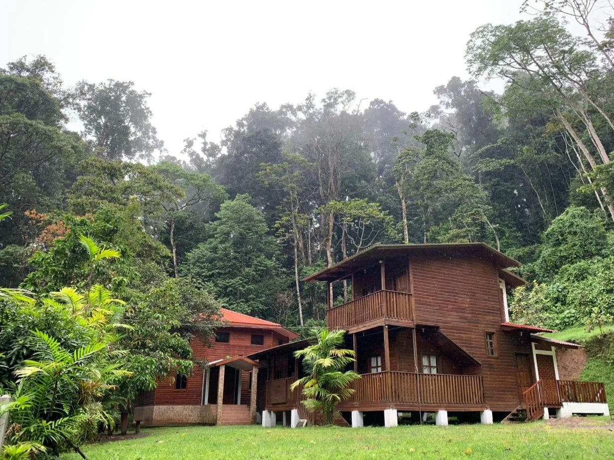
            <div class="destination__card__content">
              <h4>El mejor lugar para ver el quetzal</h4>
              <h5>Parque Nacional La Muralla · La Unión</h5>
              <p>Bosque nublado ideal para observar aves, además de tucanes, monos y orquídeas.</p>
              <div class="destination__card__footer"><h6>Parque Nacional</h6><p>Naturaleza</p></div>
            </div>
          </article>
          <article class="destination__card reveal" id="rio-platano" data-category="naturaleza aventura">
            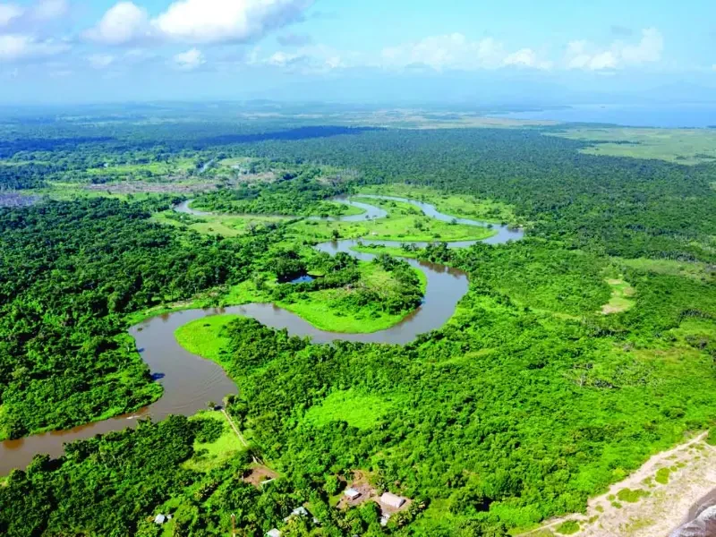
            <div class="destination__card__content">
              <h4>Selva tropical, Patrimonio de la Humanidad</h4>
              <h5>Reserva del Río Plátano · Norte de Olancho</h5>
              <p>Parte de esta gran reserva de biosfera de la UNESCO está en Olancho: selva, ríos y vida silvestre.</p>
              <div class="destination__card__footer"><h6>Reserva de biosfera</h6><p>Aventura</p></div>
            </div>
          </article>
          <article class="destination__card reveal" id="boqueron" data-category="naturaleza aventura">
            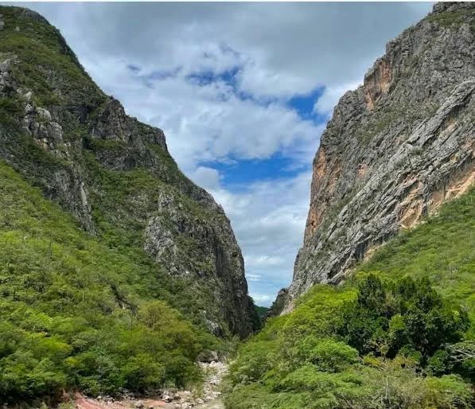
            <div class="destination__card__content">
              <h4>Un cañón de roca con pozas naturales</h4>
              <h5>El Boquerón · Entre Juticalpa y Catacamas</h5>
              <p>Paredes de roca por donde corre el río. Perfecto para caminatas, fotografía y bañarse en sus pozas.</p>
              <div class="destination__card__footer"><h6>Monumento natural</h6><p>Aventura</p></div>
            </div>
          </article>
          <article class="destination__card reveal" id="juticalpa" data-category="historia">
            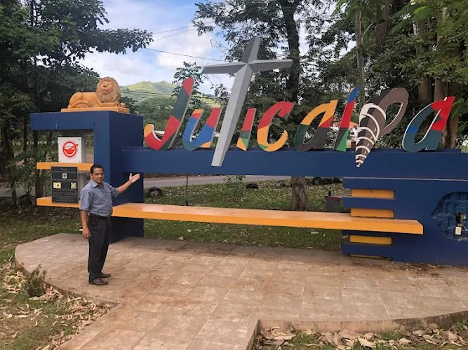
            <div class="destination__card__content">
              <h4>La cabecera departamental y su catedral</h4>
              <h5>Juticalpa</h5>
              <p>Su parque central, su catedral y su ambiente comercial la hacen el punto de partida ideal.</p>
              <div class="destination__card__footer"><h6>Ciudad</h6><p>Historia</p></div>
            </div>
          </article>
          <article class="destination__card reveal" id="manto" data-category="historia">
            
            <div class="destination__card__content">
              <h4>Uno de los pueblos más antiguos de Olancho</h4>
              <h5>Manto</h5>
              <p>Antigua sede del gobierno departamental. Sus calles y su iglesia colonial guardan siglos de historia.</p>
              <div class="destination__card__footer"><h6>Pueblo colonial</h6><p>Historia</p></div>
            </div>
          </article>
          <article class="destination__card reveal" id="rio-guayape" data-category="naturaleza aventura">
            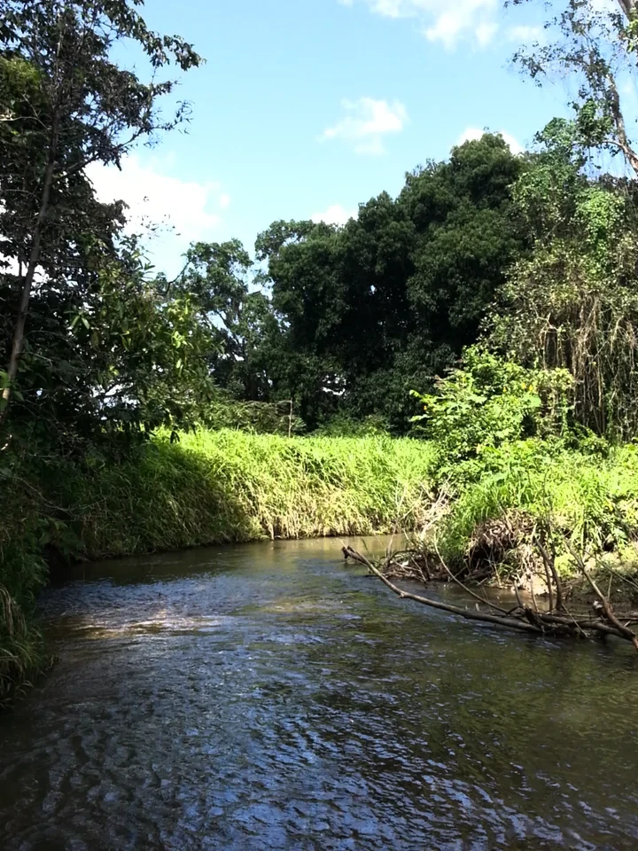
            <div class="destination__card__content">
              <h4>El río famoso por su oro</h4>
              <h5>Río Guayape · Valle de Olancho</h5>
              <p>Famoso desde la Colonia por el oro en sus arenas. Ideal para paseos, pesca y disfrutar el valle.</p>
              <div class="destination__card__footer"><h6>Río</h6><p>Naturaleza</p></div>
            </div>
          </article>
          <article class="destination__card reveal" id="catacamas" data-category="historia">
            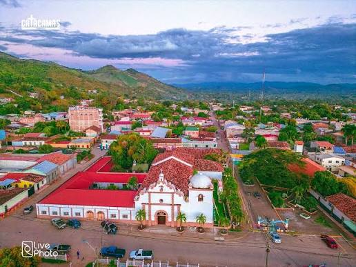
            <div class="destination__card__content">
              <h4>La ciudad más grande del departamento</h4>
              <h5>Catacamas</h5>
              <p>Sede de la Universidad Nacional de Agricultura y puerta de entrada a Talgua y a la Sierra de Agalta.</p>
              <div class="destination__card__footer"><h6>Ciudad</h6><p>Historia</p></div>
            </div>
          </article>
        </div>
        <div class="destination__btn">
          <button class="btn" id="places-more">
            <span class="btn-face"><span class="btn-text"><span class="more-label">Ver todos</span>
              <svg class="icon" viewBox="0 0 24 24" aria-hidden="true"><line x1="4" y1="12" x2="20" y2="12"/><polyline points="14 6 20 12 14 18"/></svg>
            </span></span>
          </button>
        </div>
      </div>
    </section>

    <!-- ===================== CULTURA (carrusel) ===================== -->
    <section class="section__container review__container" id="cultura">
      <div class="review__image reveal">
        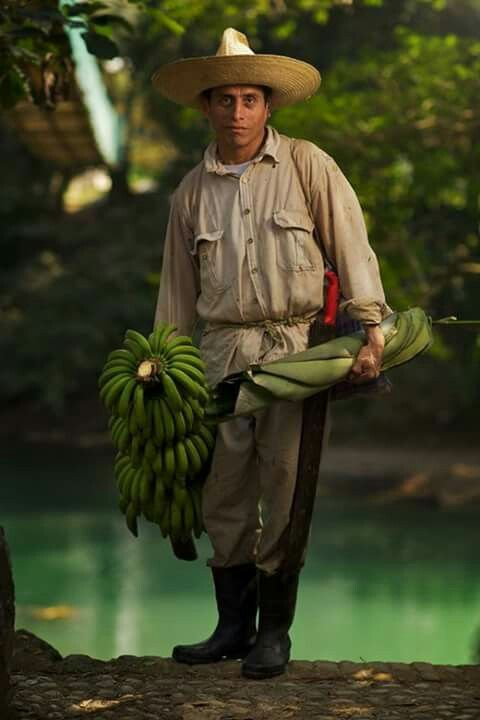
      </div>
      <div class="review__content">
        <h3 class="section__subheader">Tradiciones</h3>
        <h2 class="section__header">Cultura y festividades de Olancho</h2>
        <div class="slider" id="slider">
          <div class="slider__track" id="slider-track">
            <div class="slider__slide">
              <div class="review__card">
                <svg class="quote" viewBox="0 0 24 24" aria-hidden="true"><path d="M4 18h5l2-6V6H5v6h3zM13 18h5l2-6V6h-6v6h3z"/></svg>
                <p class="section__description">Sombrero, botas y caballo. La tradición ganadera define la identidad de Olancho y se vive en cada pueblo.</p>
                <h4>Cultura vaquera</h4>
                <h5>Identidad olanchana</h5>
              </div>
            </div>
            <div class="slider__slide">
              <div class="review__card">
                <svg class="quote" viewBox="0 0 24 24" aria-hidden="true"><path d="M4 18h5l2-6V6H5v6h3zM13 18h5l2-6V6h-6v6h3z"/></svg>
                <p class="section__description">Montas de toros, carreras de caballos y desfiles hípicos llenan los pueblos de fiesta.</p>
                <h4>Rodeos y jaripeos</h4>
                <h5>Fiestas del campo</h5>
              </div>
            </div>
            <div class="slider__slide">
              <div class="review__card">
                <svg class="quote" viewBox="0 0 24 24" aria-hidden="true"><path d="M4 18h5l2-6V6H5v6h3zM13 18h5l2-6V6h-6v6h3z"/></svg>
                <p class="section__description">Cada municipio celebra a su santo patrono con procesiones, música, comida y carnavales.</p>
                <h4>Ferias patronales</h4>
                <h5>Celebraciones religiosas</h5>
              </div>
            </div>
            <div class="slider__slide">
              <div class="review__card">
                <svg class="quote" viewBox="0 0 24 24" aria-hidden="true"><path d="M4 18h5l2-6V6H5v6h3zM13 18h5l2-6V6h-6v6h3z"/></svg>
                <p class="section__description">Exposiciones de ganado y productos lácteos que muestran la fuerza agropecuaria del departamento.</p>
                <h4>Ferias ganaderas</h4>
                <h5>Orgullo agropecuario</h5>
              </div>
            </div>
            <div class="slider__slide">
              <div class="review__card">
                <svg class="quote" viewBox="0 0 24 24" aria-hidden="true"><path d="M4 18h5l2-6V6H5v6h3zM13 18h5l2-6V6h-6v6h3z"/></svg>
                <p class="section__description">Rancheras, corridos y música de banda acompañan las celebraciones olanchanas.</p>
                <h4>Música ranchera</h4>
                <h5>Sonidos de Olancho</h5>
              </div>
            </div>
            <div class="slider__slide">
              <div class="review__card">
                <svg class="quote" viewBox="0 0 24 24" aria-hidden="true"><path d="M4 18h5l2-6V6H5v6h3zM13 18h5l2-6V6h-6v6h3z"/></svg>
                <p class="section__description">Más que un dicho: una forma de describir su territorio, su gente y su carácter.</p>
                <h4>"Olancho es grande"</h4>
                <h5>Dicho popular</h5>
              </div>
            </div>
          </div>
          <div class="slider__controls">
            <button class="slider__arrow" id="slider-prev" aria-label="Anterior">
              <svg class="icon" viewBox="0 0 24 24" aria-hidden="true"><polyline points="15 6 9 12 15 18"/></svg>
            </button>
            <div class="slider__dots" id="slider-dots"></div>
            <button class="slider__arrow" id="slider-next" aria-label="Siguiente">
              <svg class="icon" viewBox="0 0 24 24" aria-hidden="true"><polyline points="9 6 15 12 9 18"/></svg>
            </button>
          </div>
        </div>
      </div>
    </section>

    <!-- ===================== GASTRONOMÍA ===================== -->
    <section class="blog" id="comida">
      <div class="section__container blog__container">
        <h3 class="section__subheader">Sabores</h3>
        <h2 class="section__header">Gastronomía olanchana</h2>
        <div class="blog__grid" id="food-grid">
          <article class="blog__card reveal">
            
            <div class="blog__content">
              <span class="blog__tag">Sopa</span>
              <h4>Tapado olanchano</h4>
              <p class="blog__text" hidden>Sopa espesa con carne seca, yuca, plátano, malanga y otras verduras. El plato más emblemático del departamento.</p>
              <button class="btn btn-outline btn-small read-more"><span class="btn-face"><span class="btn-text">Leer más</span></span></button>
            </div>
          </article>
          <article class="blog__card reveal">
            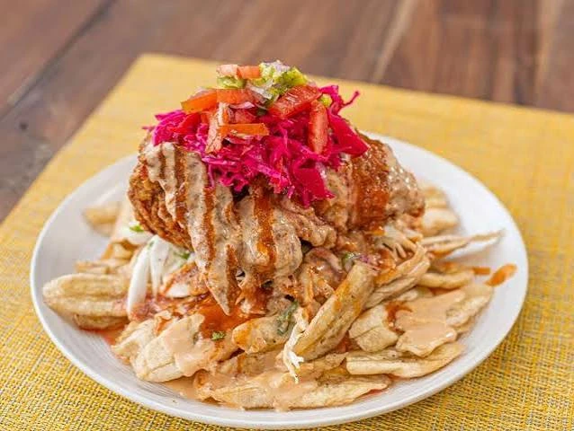
            <div class="blog__content">
              <span class="blog__tag">Plato fuerte</span>
              <h4>Pollo con tajadas</h4>
              <p class="blog__text" hidden>Pollo frito sobre tajadas de plátano verde, con repollo encurtido, chismol y aderezo.</p>
              <button class="btn btn-outline btn-small read-more"><span class="btn-face"><span class="btn-text">Leer más</span></span></button>
            </div>
          </article>
          <article class="blog__card reveal">
            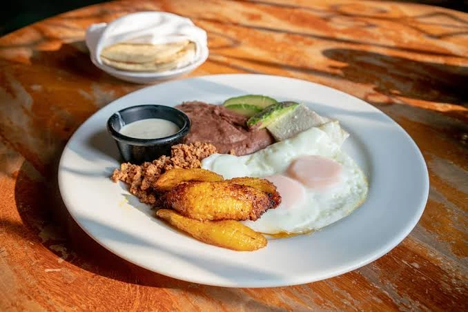
            <div class="blog__content">
              <span class="blog__tag">Desayuno</span>
              <h4>Desayuno típico</h4>
              <p class="blog__text" hidden>Huevos, frijoles fritos, plátano maduro, aguacate, chorizo y la famosa cuajada y mantequilla crema de Olancho.</p>
              <button class="btn btn-outline btn-small read-more"><span class="btn-face"><span class="btn-text">Leer más</span></span></button>
            </div>
          </article>
          <article class="blog__card reveal">
            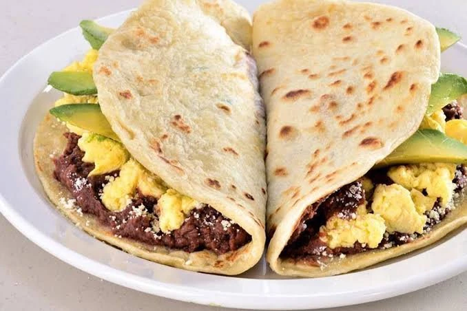
            <div class="blog__content">
              <span class="blog__tag">Antojito</span>
              <h4>Baleadas</h4>
              <p class="blog__text" hidden>Tortilla de harina recién hecha con frijoles, mantequilla y queso; también con huevo y aguacate.</p>
              <button class="btn btn-outline btn-small read-more"><span class="btn-face"><span class="btn-text">Leer más</span></span></button>
            </div>
          </article>
          <article class="blog__card reveal">
            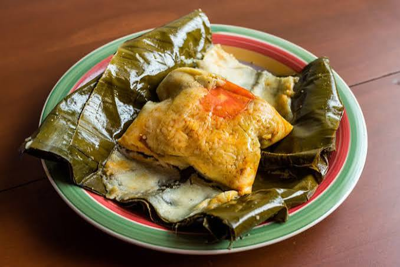
            <div class="blog__content">
              <span class="blog__tag">Tradición</span>
              <h4>Nacatamales</h4>
              <p class="blog__text" hidden>Masa de maíz rellena de cerdo o pollo, arroz y verduras, envuelta en hoja de plátano. Infaltables en diciembre.</p>
              <button class="btn btn-outline btn-small read-more"><span class="btn-face"><span class="btn-text">Leer más</span></span></button>
            </div>
          </article>
          <article class="blog__card reveal">
            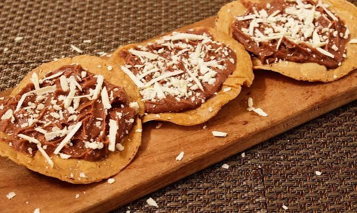
            <div class="blog__content">
              <span class="blog__tag">Antojito</span>
              <h4>Catrachitas</h4>
              <p class="blog__text" hidden>Tortillas de maíz fritas y crujientes, cubiertas con frijoles molidos y queso seco rallado.</p>
              <button class="btn btn-outline btn-small read-more"><span class="btn-face"><span class="btn-text">Leer más</span></span></button>
            </div>
          </article>
          <article class="blog__card reveal">
            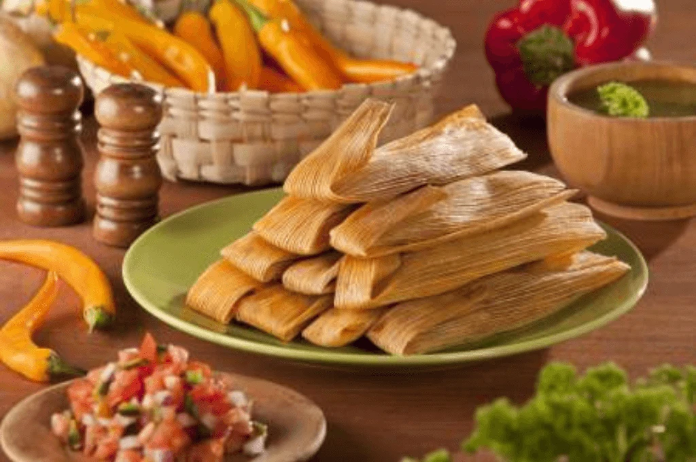
            <div class="blog__content">
              <span class="blog__tag">Temporada de elote</span>
              <h4>Atol y montucas</h4>
              <p class="blog__text" hidden>Montucas y tamalitos envueltos en hoja de maíz, acompañados de atol de elote.</p>
              <button class="btn btn-outline btn-small read-more"><span class="btn-face"><span class="btn-text">Leer más</span></span></button>
            </div>
          </article>
          <article class="blog__card reveal">
            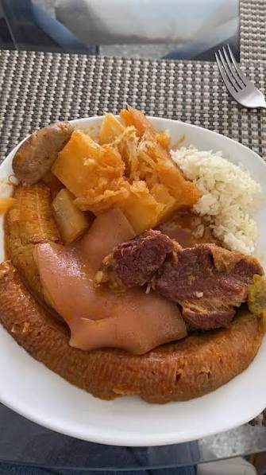
            <div class="blog__content">
              <span class="blog__tag">Sopa</span>
              <h4>Sopa de mondongo</h4>
              <p class="blog__text" hidden>Sopa tradicional con mondongo, pata de res, yuca, plátano y verduras. Se acompaña con arroz y tortillas.</p>
              <button class="btn btn-outline btn-small read-more"><span class="btn-face"><span class="btn-text">Leer más</span></span></button>
            </div>
          </article>
        </div>
        <div class="blog__btn">
          <button class="btn" id="food-more">
            <span class="btn-face"><span class="btn-text"><span class="more-label">Ver todos</span>
              <svg class="icon" viewBox="0 0 24 24" aria-hidden="true"><line x1="4" y1="12" x2="20" y2="12"/><polyline points="14 6 20 12 14 18"/></svg>
            </span></span>
          </button>
        </div>
      </div>
    </section>

    <!-- ===================== ANTES DE SALIR (teléfonos) ===================== -->
    <section class="section__container info__container" id="datos">
      <h3 class="section__subheader">Antes de salir</h3>
      <h2 class="section__header">Olancho en tu celular</h2>
      <div class="phones">
        <div class="phone reveal">
          <span class="phone-notch"></span><span class="phone-btn phone-btn-top"></span><span class="phone-btn phone-btn-bottom"></span>
          <div class="phone-screen">
            <p class="phone-tag">Ficha</p>
            <h3>Olancho en datos</h3>
            <dl class="phone-list">
              <div><dt>Cabecera</dt><dd>Juticalpa</dd></div>
              <div><dt>Ciudad más grande</dt><dd>Catacamas</dd></div>
              <div><dt>Municipios</dt><dd>23</dd></div>
              <div><dt>Superficie</dt><dd>≈ 24,000 km²</dd></div>
              <div><dt>Moneda</dt><dd>Lempira (HNL)</dd></div>
              <div><dt>Idioma</dt><dd>Español</dd></div>
            </dl>
          </div>
        </div>
        <div class="phone reveal">
          <span class="phone-notch"></span><span class="phone-btn phone-btn-top"></span><span class="phone-btn phone-btn-bottom"></span>
          <div class="phone-screen">
            <p class="phone-tag">Clima</p>
            <h3>¿Cuándo ir?</h3>
            <div class="phone-season seca"><strong>Temporada seca</strong><span>Diciembre a abril</span><p>La mejor para caminatas, cuevas y ríos.</p></div>
            <div class="phone-season lluvia"><strong>Temporada lluviosa</strong><span>Mayo a noviembre</span><p>Todo verde, pero caminos con lodo.</p></div>
            <p class="phone-note">En el valle hace calor; en la montaña hace frío. Lleva abrigo.</p>
          </div>
        </div>
        <div class="phone reveal">
          <span class="phone-notch"></span><span class="phone-btn phone-btn-top"></span><span class="phone-btn phone-btn-bottom"></span>
          <div class="phone-screen">
            <p class="phone-tag">Ruta</p>
            <h3>Desde Tegucigalpa</h3>
            <ol class="phone-route">
              <li><strong>Tegucigalpa</strong><span>Salida</span></li>
              <li><strong>Guaimaca</strong><span>Francisco Morazán</span></li>
              <li><strong>Campamento</strong><span>Entrada a Olancho</span></li>
              <li><strong>Juticalpa</strong><span>≈ 3 horas en carro</span></li>
              <li><strong>Catacamas</strong><span>Cuevas de Talgua</span></li>
            </ol>
          </div>
        </div>
        <div class="phone reveal">
          <span class="phone-notch"></span><span class="phone-btn phone-btn-top"></span><span class="phone-btn phone-btn-bottom"></span>
          <div class="phone-screen">
            <p class="phone-tag">Consejos</p>
            <h3>Qué llevar</h3>
            <ul class="phone-checks">
              <li>Ropa cómoda y botas para caminar</li>
              <li>Repelente y bloqueador</li>
              <li>Impermeable y abrigo para la montaña</li>
              <li>Agua y algo de comer</li>
              <li>Efectivo en lempiras</li>
            </ul>
            <p class="phone-note">En la Sierra de Agalta, La Muralla y las reservas, contrata siempre un guía local autorizado.</p>
          </div>
        </div>
      </div>
    </section>

    <!-- ===================== CINTA DE FOTOS ===================== -->
    <section class="banner" aria-label="Fotos de Olancho">
      <div class="banner__wrapper" id="banner">
        
        
        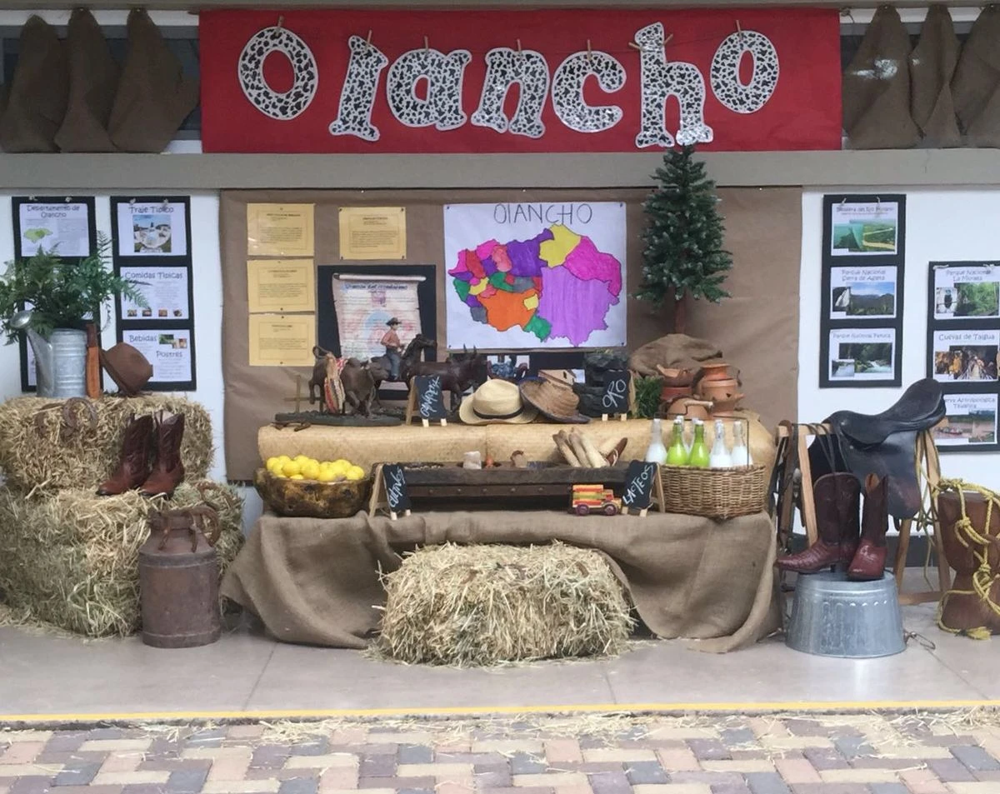
        
        
        
        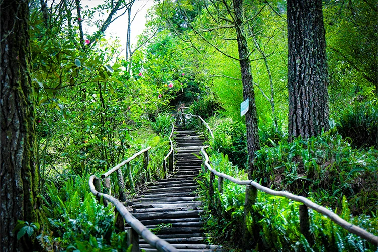
        
      </div>
    </section>

    <!-- ===================== PIE DE PÁGINA ===================== -->
    <footer id="contacto">
      <div class="section__container footer__container">
        <div class="footer__logo"><a href="#inicio"><span>Visita</span> Olancho</a></div>
        <ul class="footer__links">
          <li><a href="#inicio">Inicio</a></li>
          <li><a href="#acerca">Acerca</a></li>
          <li><a href="#lugares">Lugares</a></li>
          <li><a href="#comida">Comida</a></li>
          <li><a href="#cultura">Cultura</a></li>
          <li><a href="#datos">Datos</a></li>
        </ul>
        <ul class="footer__contact">
          <li>Juticalpa, Olancho, Honduras</li>
          <li>+504 0000-0000</li>
          <li>info@visitaolancho.hn</li>
          <li><a href="https://www.google.com/maps/place/Olancho,+Honduras" target="_blank" rel="noopener">Ver Olancho en Google Maps</a></li>
        </ul>
        <ul class="footer__socials">
          <li><a href="#" aria-label="Facebook"><svg class="icon" viewBox="0 0 24 24" aria-hidden="true"><path d="M18 2h-3a5 5 0 0 0-5 5v3H7v4h3v8h4v-8h3l1-4h-4V7a1 1 0 0 1 1-1h3z"/></svg></a></li>
          <li><a href="#" aria-label="Instagram"><svg class="icon" viewBox="0 0 24 24" aria-hidden="true"><rect x="2" y="2" width="20" height="20" rx="5"/><path d="M16 11.4A4 4 0 1 1 12.6 8 4 4 0 0 1 16 11.4z"/><line x1="17.5" y1="6.5" x2="17.5" y2="6.5"/></svg></a></li>
          <li><a href="#" aria-label="YouTube"><svg class="icon" viewBox="0 0 24 24" aria-hidden="true"><path d="M22.5 6.4a2.8 2.8 0 0 0-2-2C18.9 4 12 4 12 4s-6.9 0-8.5.4a2.8 2.8 0 0 0-2 2A29 29 0 0 0 1 12a29 29 0 0 0 .5 5.6 2.8 2.8 0 0 0 2 2c1.6.4 8.5.4 8.5.4s6.9 0 8.5-.4a2.8 2.8 0 0 0 2-2A29 29 0 0 0 23 12a29 29 0 0 0-.5-5.6z"/><polygon points="9.8 15.5 15.5 12 9.8 8.5 9.8 15.5"/></svg></a></li>
        </ul>
      </div>
      <div class="footer__bar">© 2026 Visita Olancho · Proyecto escolar</div>
    </footer>

    <script src="js/main.js"></script>
